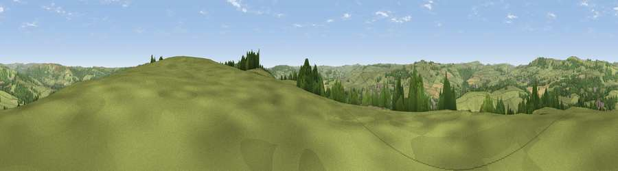

Viewpoint near Bakewell
#21425 in England · top 35% of its area beats it · near BakewellWhere it is
The exact computed spot (SK 22725 69625). Click the marker for map links.
The view, rendered

A 360° render of this exact spot computed from the terrain model, tree cover and land cover — summer colours, afternoon light, calibrated against photographs of famous viewpoints. Real trees, hedges and buildings will differ in detail.
The panorama
Grey silhouette: terrain skyline in each direction (720 bearings, Earth curvature and refraction included). Dashed green: skyline with trees (+15 m) and buildings (+8 m) as obstacles. Blue strip: how far the ground is visible on each bearing.
Where the view opens
Wedge length = distance to the farthest visible ground on that bearing (vegetation-aware). Rings at 10, 25 and 50 km.
What fills the view
63% grassland · 29% woodland · 4% built-up · 3% cropland
Angular shares of the visible panorama (visual magnitude), not map area. Landscape diversity 0.39 (0–1 Shannon).
Key numbers
More beautiful places nearby
The staircase of upgrades: each row has a higher view potential than everything closer. Driving times are estimates from straight-line distance, calibrated against real road routing — check an actual route before setting out.
| Place | Direction | Drive | Score |
|---|---|---|---|
| Viewpoint near Bakewell | SSE · 1 km | ~2 min | 51.6 |
| Viewpoint near Edensor | SE · 2 km | ~5 min | 56.1 |
| Viewpoint near Hassop | N · 4 km | ~9 min | 57.1 |
| High Rake | NNW · 4 km | ~10 min | 71.1 |
| Lord's Seat | NW · 18 km | ~31 min | 73.1 |
| Tissington Hill | SSW · 19 km | ~32 min | 75.5 |
| Wild Bank | NW · 37 km | ~56 min | 76.2 |
| Viewpoint near Carrbrook | NW · 38 km | ~57 min | 77.1 |
53.22319, -1.66109 · source: screening · position refined by local search. Computed location — check access rights before visiting.